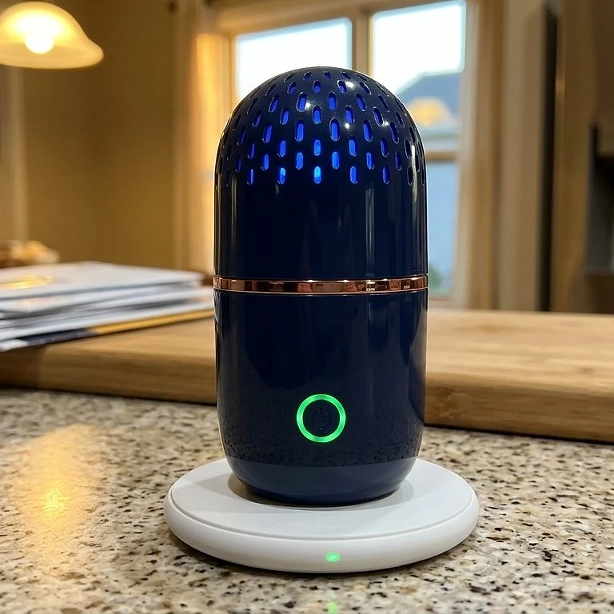
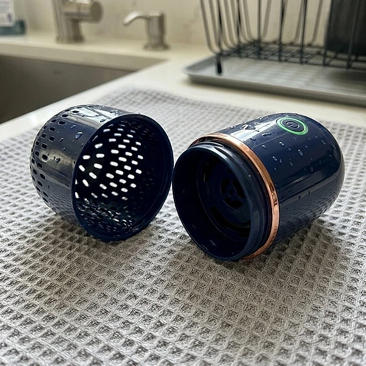

Was ist PodBloom und wie funktioniert es?
PodBloom ist ein mobiler Obst- und Gemüsereiniger in Kapselform. Laut der offiziellen Website soll er Pestizidrückstände, Wachs und Schmutz abbauen, die beim kurzen Abspülen unter dem Wasserhahn auf Obst und Gemüse zurückbleiben, und zwar nur mit klarem Leitungswasser, ohne Sprays, Reinigungsmittel oder Nachfüllpackungen.
Das Prinzip ist die Elektrolyse, die auch in anderen Wasseraufbereitern genutzt wird. Sie legen das Gerät zusammen mit dem Obst oder Gemüse in eine Schüssel mit Wasser und drücken den Knopf. Titan-Elektroden im Inneren erzeugen laut Hersteller aktive OH⁻-Ionen, die Rückstände auf der Oberfläche der Lebensmittel abbauen sollen. Nach etwa zehn Minuten ist der Zyklus beendet, und Obst und Gemüse werden kurz abgespült.
Während des Zyklus gibt das Gerät feine Bläschen ab, und das Wasser verfärbt sich oft trüb oder milchig. Die Website erklärt das als sichtbaren Hinweis darauf, dass sich Rückstände, Wachs und Schmutz lösen. Wie stark die Verfärbung ist, hängt davon ab, was gereinigt wird.
Das Gerät ist nach IPX7 wassergeschützt und arbeitet vollständig unter Wasser. Geladen wird es kabellos auf einer mitgelieferten Ladestation, sodass es keine offenen Ladeanschlüsse gibt. Zum Reinigen lässt es sich mit einer Drehung in zwei abwaschbare Teile zerlegen.
Positiv ist, dass die Website ihre Aussagen einordnet: Laut Hersteller entfernte die Reinigung mit elektrolysiertem Wasser in wissenschaftlich begutachteten Studien etwa 40 bis 86 Prozent bestimmter Pestizidrückstände, abhängig von Rückstand und Sorte, und keine Methode entfernt alles. Die Trübung des Wassers allein ist allerdings kein Messwert für Pestizide. Laut Website nutzen bereits über 2.000 Haushalte das Gerät, und die Bewertungen liegen nach Angaben des Herstellers bei 4,9 von 5 Sternen. Gereinigtes Obst und Gemüse soll zudem länger frisch bleiben.
PodBloom Funktionen
Laut der offiziellen Website bietet PodBloom:
Elektrolyse mit Titan-Elektroden: erzeugt aus Leitungswasser aktive OH⁻-Ionen gegen Oberflächenrückstände.
Freihändiger Zyklus: etwa zehn Minuten pro Durchgang, Start per Knopfdruck.
IPX7-Wasserschutz: arbeitet komplett untergetaucht in Schüssel oder Spüle.
Kabelloses Laden: auf der mitgelieferten Ladestation, ohne Anschlüsse am Gerät.
Zerlegbar: zwei abwaschbare Teile für die Reinigung des Geräts selbst.
Ohne Zusätze: keine Sprays, keine Tabletten, kein Nachfüllen, kein Nachgeschmack.
Im Vergleich mit dem bloßen Abspülen und mit Essig- oder Natronbädern hebt die Website hervor, dass PodBloom ohne Geschmack und Geruch arbeitet und schonend zu Beeren und zartem Grün sein soll. Angaben zu Akkulaufzeit, Ladezeit, Gewicht oder Größe macht die Website nicht. Auf den Produktbildern ist das Gerät dunkelblau mit kupferfarbenem Ring und grüner Leuchtanzeige.
Laut den häufig gestellten Fragen bleibt nach dem Zyklus nichts auf den Lebensmitteln zurück, weil nur Wasser verwendet wird: kein Essiggeschmack, kein Seifenfilm und kein Geruch. Die Partikel, die sich lösen, verteilen sich im Wasser, weshalb es am Ende oft trüb oder milchig ist. Der Hersteller betont außerdem, dass PodBloom Oberflächenrückstände reduziert und keine vollständige Entfernung aller Verunreinigungen verspricht.
PodBloom Anwendung
Laut der offiziellen Website ist die Anwendung einfach: Schüssel oder Spüle mit Leitungswasser füllen, Obst oder Gemüse hineinlegen, PodBloom dazulegen und den Knopf drücken. Nach etwa zehn Minuten ist der Zyklus beendet. Anschließend spülen Sie die Lebensmittel kurz unter dem Wasserhahn ab, dann sind sie bereit zum Essen, Kochen oder Aufbewahren.
Nach der Benutzung zerlegen Sie das Gerät in seine zwei Teile, spülen es ab und stellen es zurück auf die kabellose Ladestation, damit es für den nächsten Einkauf geladen ist. Das trübe Wasser schütten Sie weg.
Allgemeine Hinweise: Verwenden Sie genug Wasser, damit Obst und Gemüse vollständig bedeckt sind, und überfüllen Sie die Schüssel nicht. Empfindliche Beeren sollten Sie danach vorsichtig abtropfen lassen. Kartoffeln und stark verschmutztes Wurzelgemüse sollten vorher grob von Erde befreit werden. Die Ladestation selbst gehört nicht ins Wasser.
Laut den Kundenbewertungen auf der Website nutzen viele das Gerät gleich nach dem Einkauf, etwa für Trauben, Äpfel, Erdbeeren oder Salat. Ein Kunde berichtet, dass er früher Essigbäder verwendet und diese durch PodBloom ersetzt hat, weil das Abmessen und der Geruch wegfallen.
Planen Sie die zehn Minuten am besten so ein, dass Sie in dieser Zeit den restlichen Einkauf wegräumen, denn das Gerät arbeitet freihändig und muss nicht beaufsichtigt werden.
PodBloom – Rückerstattung
Laut der offiziellen Website gilt eine 30-Tage-Geld-zurück-Garantie. Wer nicht vollständig zufrieden ist, kann das Gerät innerhalb von 30 Tagen nach Erhalt zurücksenden und erhält laut Hersteller eine vollständige Rückerstattung. Auf der Bestellseite wird außerdem eine kostenlose Rücksendung genannt.
Die Rückgaberichtlinie des Verkäufers beschreibt den Ablauf genauer. Zuerst wenden Sie sich an den Kundenservice per E-Mail; es gibt eine eigene Adresse für deutschsprachige Kundinnen und Kunden. Die Ware muss sich im Originalzustand befinden, mit Originalverpackung, und wird an die Adresse geschickt, die der Kundenservice nennt. Für die Erstattung braucht der Verkäufer die Sendungsnummer der Rücksendung.
Laut den häufig gestellten Fragen werden alle Bestellungen innerhalb von 48 Stunden versendet, und der Standardversand dauert je nach Standort 5 bis 12 Werktage. Für Verbraucher in der EU gilt zusätzlich das gesetzliche Widerrufsrecht von 14 Tagen. Testen Sie das Gerät nach der Lieferung möglichst bald, damit Sie innerhalb der Frist reagieren können.
Verkäufer ist laut Impressum die Label Products B.V. mit Sitz in Helmond in den Niederlanden. Bewahren Sie die Originalverpackung und Ihre Bestellbestätigung auf, damit eine Rückgabe innerhalb der Frist ohne Probleme möglich ist. Bei einem Defekt wenden Sie sich direkt an den Kundenservice und beschreiben Sie das Problem möglichst genau, am besten mit Fotos.
PodBloom Kundenbewertungen
-
Monika B. — MünchenVerifizierter Kauf
„Ich spüle alles ab, also dachte ich, mein Obst wäre längst sauber. Dann lief mein erster PodBloom-Zyklus mit einer Schüssel Trauben — und das Wasser wurde trüb und grau. Jetzt esse ich sie nicht mehr anders.“
-
Stefan R. — HamburgVerifizierter Kauf
„Jahrelang habe ich alles in Essig eingeweicht — abmessen, warten, den Geruch abspülen. PodBloom hat das alles ersetzt. Zehn Minuten später ist alles fertig — und nichts schmeckt mehr nach Salatdressing.“
-
Petra S. — KölnVerifizierter Kauf
„Seit wir die Erdbeeren mit PodBloom reinigen, bleiben sie spürbar länger frisch, und ich gebe sie mit gutem Gefühl direkt an meine Kinder weiter. Sie greifen viel öfter zu Obst.“
PodBloom – Wo kaufen?
PodBloom wird über die offizielle Website get-podbloom.com verkauft. Dort finden Sie die Übersicht, die Vorteile, einen Vergleich mit Abspülen und Essigbädern, die Kundenbewertungen, die häufig gestellten Fragen und die Angebote mit einem bis vier Geräten.
Obst- und Gemüsereiniger mit Elektrolyse-Technik werden von mehreren Anbietern verkauft, oft in ähnlicher Kapselform und unter wechselnden Namen. Bei Angeboten auf Marktplätzen ist nicht sicher, ob es sich um dasselbe Gerät handelt, und die 30-Tage-Garantie des Verkäufers gilt dort in der Regel nicht.
Achten Sie beim Besuch darauf, dass die Adresse get-podbloom.com lautet. Die Seite arbeitet mit einem Countdown und Hinweisen auf knappe Stückzahlen; lassen Sie sich davon nicht drängen und prüfen Sie im Bestellvorgang die Anzahl der Geräte, denn die Angebote reichen von einem bis zu vier Stück. Nach dem Versand erhalten Sie laut Website eine E-Mail mit Sendungsverfolgung. Ab zwei Geräten ist der Versand laut Angebotsseite kostenfrei; Links zu AGB, Datenschutz, Rückgabe und Impressum stehen im Fußbereich der Seite.
Um sicherzugehen, dass Sie das Originalprodukt erhalten, besuchen die meisten Nutzer die offizielle Website.
Ist PodBloom Betrug?
Nach den verfügbaren Informationen gibt es keinen Hinweis darauf, dass PodBloom Betrug ist. Das Gerät wird über eine eigene Website mit Funktionsbeschreibung, häufig gestellten Fragen, Rückgaberichtlinie und Impressum verkauft. Verkäufer ist laut Impressum die Label Products B.V. aus Helmond in den Niederlanden, mit Handelsregisternummer und Umsatzsteuer-Identifikationsnummer.
Positiv fällt auf, dass die Website ihre Wirkung ehrlich einordnet: Sie nennt eine Spanne von etwa 40 bis 86 Prozent für bestimmte Pestizidrückstände und sagt ausdrücklich, dass keine Methode alles entfernt. Dazu kommen die 30-tägige Geld-zurück-Garantie und ein deutschsprachiger Kundenservice per E-Mail.
Es gibt aber Punkte, die Aufmerksamkeit verdienen. Die Studienangaben beziehen sich auf elektrolysiertes Wasser allgemein und nicht auf dieses konkrete Gerät. Die Trübung des Wassers ist kein Beweis für entfernte Pestizide, sondern kann auch durch Bläschen, Wachs oder Schmutz entstehen. Die Produktbilder wirken wie aufwendige Renderings. Technische Daten wie Akkulaufzeit fehlen, und die Bestellseite arbeitet mit Countdown und Rabatthinweisen.
Vorsicht ist außerdem bei Angeboten außerhalb der offiziellen Website geboten, denn dort gilt die Garantie des Verkäufers in der Regel nicht. Wie bei jedem Haushaltsgerät sollten Sie realistische Erwartungen haben. Wer die Bedingungen kennt und direkt auf der offiziellen Website bestellt, geht nach heutigem Stand kein besonderes Risiko ein.
Wer Produktdetails überprüfen oder die aktuelle Verfügbarkeit prüfen möchte, ist auf der offiziellen PodBloom-Website am sichersten aufgehoben.
